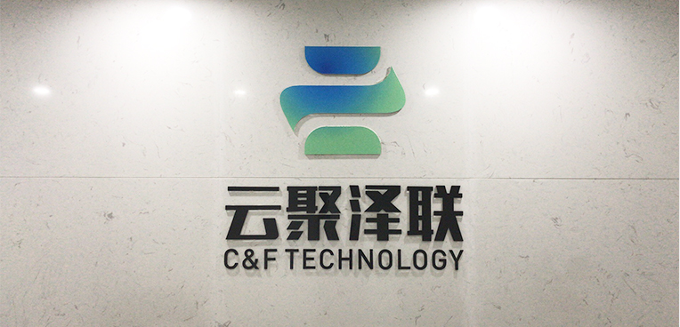
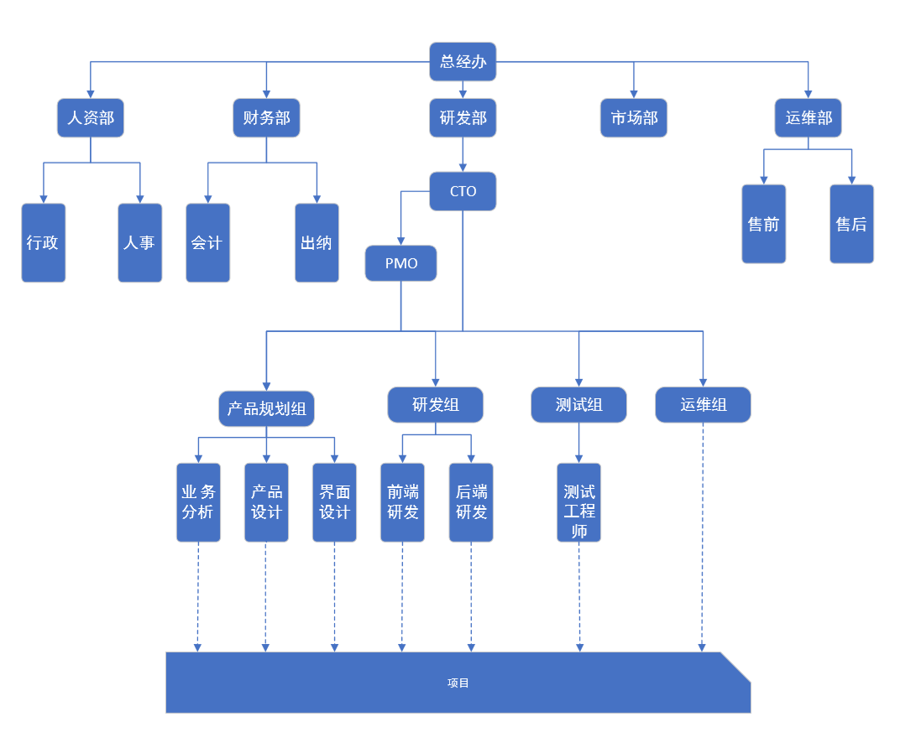

028-8596-3638
-
可视化平台
-
数据交换工具
-
大数据平台
-
智能服务平台
-
决策分析平台
-
自然语言处理
-
知识图谱
- 行业应用解决方案
-
MoM中台
-
MES系统
-
制造大数据
-
政务大数据

四川云聚泽联科技有限公司成立于2018年，云聚出自：《尚书大传·虞夏传》：卿云聚，俊乂集，百工相和而歌卿云。帝乃倡之曰：卿云烂兮，糺缦缦兮。日月光华，旦复旦兮。泽：学问丰富，名利双收，官或财旺，智勇双全，一生荣贵。云又有IT层面的“云”的含义；联，互联互通。云聚泽联，俊才汇聚，官财两旺，四方通联。
公司由成都进海科技、云和恩墨信息技术有限公司、杭州数澜科技、杭州玳数科技等几家国内知名公司专家筹建而成。公司核心人员多年来参与国防军工行业系统集成服务、大数据服务、数据库应用服务、可视化系统等专业领域建设，积累了丰富的行业经验并沉淀了对块领域的核心技术产品。公司核心成员先后参与过：成都飞机工业集团公司高性能计算机系统建设；成都飞机工业集团公司ERP数据库优化整合项目；成都飞机工业集团公司PDM系统建设服务；成都飞机设计研究所高性能计算系统建设；成都飞机设计研究所协同平台系统建设；长安汽车集团EBOM、PBOM系统、整车MES系统研发项目；茅台集团可视化项目；社保系统可视化建设项目等；公司依托大数据、自然语言处理（NLP）、机器学习、AI、可视化展示平台等智能技术，构建面向全球高新技术的大数据平台，获取分析前沿高新技术相关的高价值数据，通过人机结合的数据处理和分析能力，为国防军工、科技创新、金融投资等领域提供决策所需的关键数据和分析服务，最终帮助行业用户实现以数据分析预测为核心的科学决策和智能化运营体系。
公司立足于国防军工行业，依托于人才资源优势和深厚的信息技术背景，建立了优秀、高效的研发、销售、运维服务团队。先后与电子科技大学、四川大学等知名高校进行技术以及人才引进合作，并聘请了成电千人计划的专家人才作为公司专家顾问，向行业客户提供专业的战略咨询、全球高新技术数据资源云服务、行业高新技术大数据智能分析系统、安全产品咨询与服务、基础平台建设等产品和服务。公司与IBM、ORACLE、FUJITSU、VERITAS、华为、浪潮、联想等国内外知名IT公司有深厚的合作关系，能为国防军工等行业提供一站式的解决方案！
云聚泽联组织架构图

-
系统架构师
15K-30K
-
主要工作职责
1、针对大数据分析生态中的内容，负责并指导自然语言处理及图像理解等基础算法研究工作。工作内容包括但不限于：词法分析、语义分析、用户意图理解、情感分析、分类、图像内容理解、用户画像、文本挖掘、推荐引擎、知识图谱构建等；
2、能够将自然语言处理及图像理解相关技术应用到具体的业务场景中，并根据不同的业务场景特点进行算法优化；
3、负责调研最前沿的人工智能技术，追踪并实验最新NLP前沿技术，参与搭建和实现相关模型；
4、具备独立孵化与打造自然语言处理相关领域自主产品的能力；
5、具有较强的技术团队管理能力，能够带领团队出色的完成相关技术工作。同时，善于建立并完善公司各项研发规范及流程，并制定各项措施推动技术团队整体能力的提升。
-
任职资格
1、具有硕士以上学历，计算机科学，数学，统计学等相关专业，五年以上工作经验；
2、能够利用自然语言处理的理论和方法研发分词、词性标注、命名实体识别等基础算法。善于跟踪自然语言处理业界最新动态，进行自然语言处理相关的其他算法预研。有搭建知识图谱
(knowledge graph)和机器学习系统 (machine learning)者优先；
3、精通C, C++, Java, 或Python中的一门或多门语言，精通数据结构和算法设计，熟悉Linux /
Unix系统和Shell编程；有MapReduce或Hadoop等海量处理经验优先；
4、优秀的分析问题和解决问题的能力，对解决具有挑战性问题充满激情；对数据敏感，有强烈的好奇心，喜欢折腾数据并从数据中发现价值；
5、较强的沟通能力和逻辑表达能力，具备良好的团队合作精神和主动意识，良好的自我驱动和学习能力；
6、能够无障碍阅读英文论文。
-
自然语言处理专家
面谈
-
主要工作职责
1、负责行业大数据信息化建设顶层设计与业务规划工作（政府、公安，电信等），有效地制定行业大数据发展方向和布局；
2、负责对行业大数据领域开展市场调研、政策规划、业务诉求等深入研究，结合公司大数据基础设施建设与服务能力，协同产品研发团队构建公司在行业大数据领域的核心解决方案和相关产品体系；
3、主导并承担行业项目调研、分析并引导客户业务需求，结合公司产品和解决方案推动项目的具体实施与落地；
4、具有较强的业务团队管理能力，能够带领团队出色的完成相关技术工作。同时，善于建立并完善公司各项实施方法论、业务规范及流程，并制定各项措施推动业务团队整体能力的提升。
-
任职资格
1、具有硕士以上学历，计算机科学，数学，统计学等相关专业，五年以上工作经验；
2、能够利用自然语言处理的理论和方法研发分词、词性标注、命名实体识别等基础算法。善于跟踪自然语言处理业界最新动态，进行自然语言处理相关的其他算法预研。有搭建知识图谱
(knowledge graph)和机器学习系统 (machine learning)者优先；
3、精通C, C++, Java, 或Python中的一门或多门语言，精通数据结构和算法设计，熟悉Linux /
Unix系统和Shell编程；有MapReduce或Hadoop等海量处理经验优先；
4、优秀的分析问题和解决问题的能力，对解决具有挑战性问题充满激情；对数据敏感，有强烈的好奇心，喜欢折腾数据并从数据中发现价值；
5、较强的沟通能力和逻辑表达能力，具备良好的团队合作精神和主动意识，良好的自我驱动和学习能力；
6、能够无障碍阅读英文论文。
-
大数据行业应用专家
面谈
-
主要工作职责
1、负责行业大数据信息化建设顶层设计与业务规划工作（政府、公安，电信等），有效地制定行业大数据发展方向和布局；
2、负责对行业大数据领域开展市场调研、政策规划、业务诉求等深入研究，结合公司大数据基础设施建设与服务能力，协同产品研发团队构建公司在行业大数据领域的核心解决方案和相关产品体系；
3、主导并承担行业项目调研、分析并引导客户业务需求，结合公司产品和解决方案推动项目的具体实施与落地；
4、具有较强的业务团队管理能力，能够带领团队出色的完成相关技术工作。同时，善于建立并完善公司各项实施方法论、业务规范及流程，并制定各项措施推动业务团队整体能力的提升。
-
任职资格
1、具有本科以上学历，计算机、信息管理、情报等相关专业，八年以上工作经验；
2、在政府、公安、电信等领域有业务规划咨询、架构规划、IT项目实施相关工作经验，对行业的发展方向、业务服务、政策法规、竞争环境、业务痛点等有深入解；
3、了解人工智能、大数据、区块链、云计算分布式架构等技术，对相关领域有足够认知洞察能力，并能前瞻性地理解技术发展趋势和应用场景；
4、有很强的业务分析、文档编写及演讲表达能力和学习能力，能快速分析和归纳客户痛点和需求，并提供定制化解决方案；
5、具有良好的沟通表达能力和组织协调能力。团队意识强，抗压能力强，有激情，不抱怨，勇于接受挑战，善于开拓创新。
-
技术顾问
10K-25K
-
主要工作职责
1、规划大数据应用软件产品（包括数据引擎、计算引擎、智能引擎等），设计产品功能，并对产品交付负责；
2、负责大数据应用软件产品各个生命周期，包括但不限于需求调研，解决方案整理，转化设计，创建产品原型并与客户进行沟通确认等；
3、调研同类产品，关联团队需求，产出PRD和DEMO，及相应产品文档撰写；
4、与第三方合作商进行沟通，整合解决方案并形成产品方案；
5、在产品预研，开发，发布和迭代的过程中负责各个关联团队之间的交流与合作，确保合作的畅通与高效。
-
任职资格
1、全日制本科及以上学历，计算机、信息管理等相关专业，软件行业5年以上工作经验；
2、三年以上政府、公安、电信行业大数据可视化、数据服务、舆情系统、商业智能等项目研发经验；
3、熟悉软件产品设计工具及数据分析辅助工具，如MindManager, Axure, Sketch, Tableau等；
4、具有强烈的工作热情和数据敏锐度，基本的数据建模及可视化分析能力，独立的文档产出能力；
5、学习能力强，能快速补充行业知识，理解业务模型及快速转化设计；
6、有较强的逻辑思维能力、良好的沟通协调能力、团队写作和抗压能力。
Copyright © 2018-2019 C&F Tech. All rights reserved.
蜀ICP备蜀ICP备19008208号
- 产品
- 智能情况分析系统
- 大数据组件可视化系统
- 智能业务服务系统
- 通用解决方案
- 系统集成服务
- 大数据服务
- 数据库应用服务
- 可视化系统